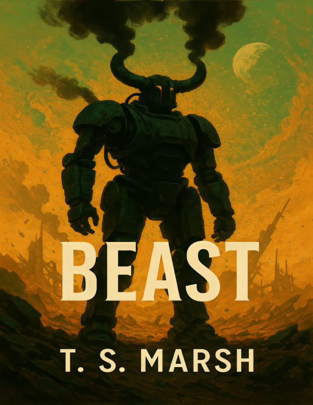
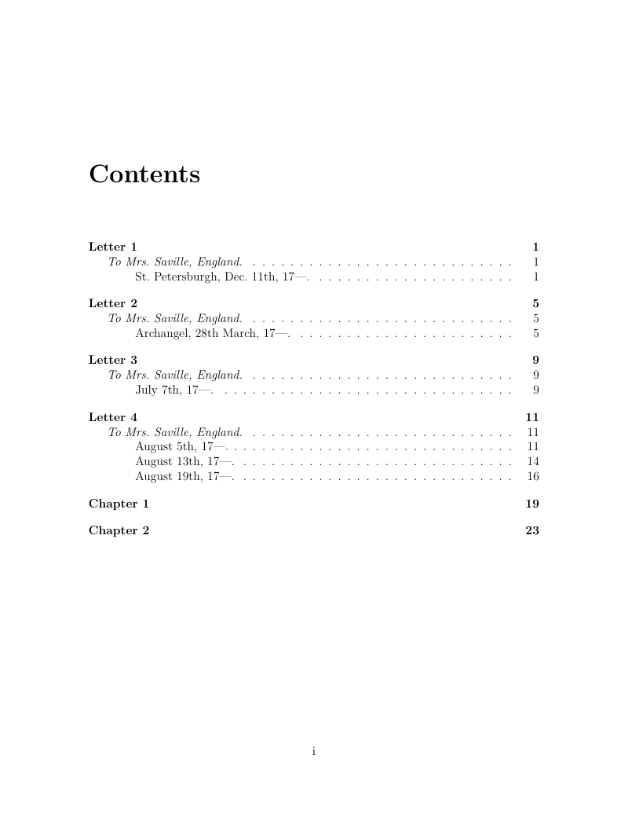
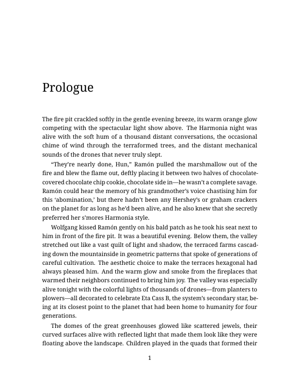
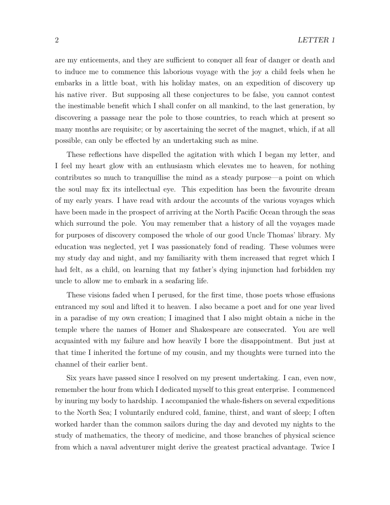

Transform your markdown manuscripts into beautiful PDFs, EPUBs, and audiobooks
Generate PDF, EPUB, DOCX, and plain text from a single markdown source. Professional typography powered by LaTeX.
Customizable fonts, chapter headings, and layouts. Built-in support for Crimson Pro, EB Garamond, and more.
Convert your manuscript to MP3 audiobooks using ElevenLabs TTS with natural-sounding voices.
Professional line and copy editing powered by Claude, GPT-4, or local LLMs via Ollama.
One command to build. Git-based editing workflow with branches for review and selective merging.
Override any setting with bones.mk. Custom fonts, page sizes, margins, and more.
# Initialize a new book project
bones init
# Build PDF
bones pdf
# Build EPUB
bones epub
# Generate audiobook
bones mp3
# AI-assisted editing
bones lineedit # Style and consistency review
bones copyedit # Grammar and clarity editsHigh-level developmental feedback on your manuscript.
Sentence-level improvements with git-based workflow.
Works with Claude (Anthropic), GPT-4 (OpenAI), or local models (Ollama)
Real examples from "Frankenstein" by Mary Shelley - built with Bones

Custom covers with your artwork integrate seamlessly with LaTeX-generated interiors

Auto-generated, perfectly formatted chapter listings with page numbers

Professional chapter openings with consistent spacing and typography

Optimized line spacing, margins, and typography for comfortable reading
From markdown to professional PDF in one command:
bones pdfbrew tap tsmarsh/bones
brew install bonesNo sudo required • All dependencies included • Works on macOS and Linux
Run brew install bones (Homebrew) or sudo make install (from source)
Run bones init in your project directory
Edit your chapters in the chapters/ directory
Run bones pdf to create your book
git clone https://github.com/tsmarsh/bones.git
cd bones
sudo make installmkdir ~/my-book && cd ~/my-book
bones init
bones pdf